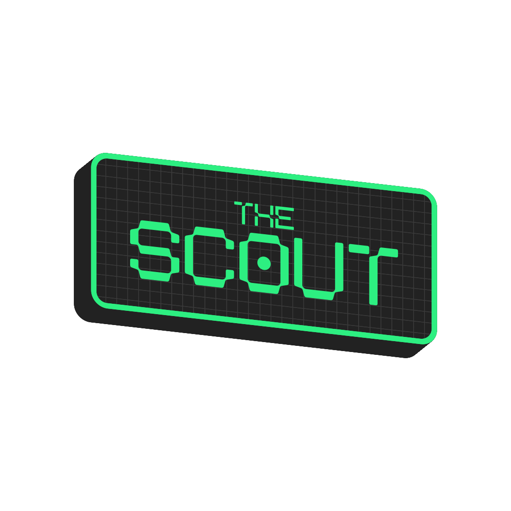
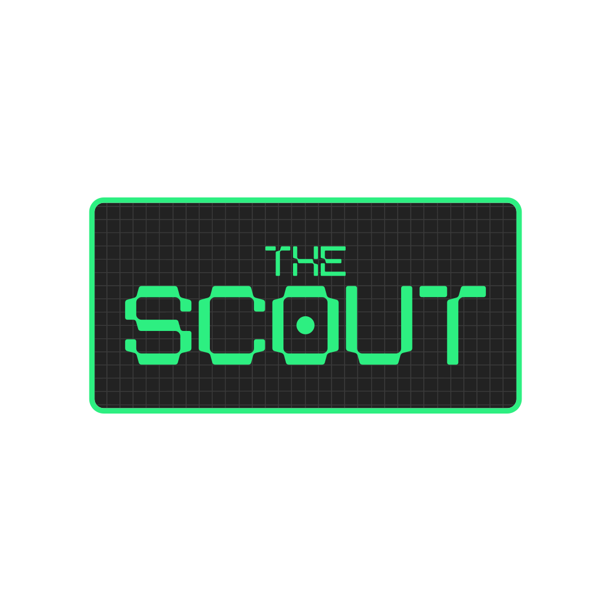
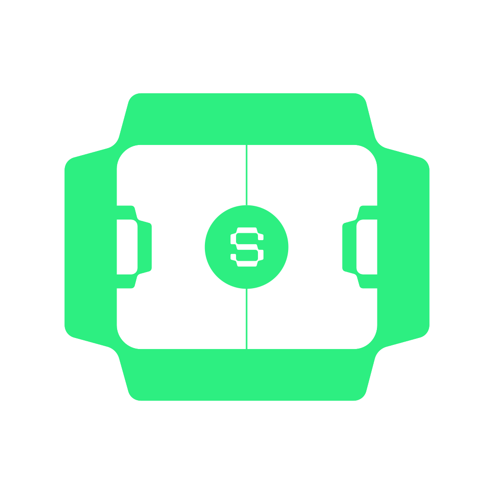

Sign up
Create your account with Google or Apple, then you are in the tunnel with everyone else who lives on the ball.

Football · Discovered

Short video profiles and a discovery feed built so your moments find the right eyes on merit, not on who you know.
Three moves from first open to the top of the board. Same app, built for football.
Create your account with Google or Apple, then you are in the tunnel with everyone else who lives on the ball.
Upload short clips of goals, skills, and training so your best moments sit on the feed where clubs can see them.

Attention and saves move you up the board. Push higher in ranking until you are the name everyone is tracking.

You show what you can do on the feed. When a club scouts you, the app tells you first, plain and fast, so you know you were seen.


The Scout connects talent and clubs directly, with your best moments in front of people who can actually move your career, with no one in the middle. When more players across Egypt are scouted on merit, the whole game sharpens from local pitches to the national team. We are here so the dream of playing at the highest level stays honest, and so Egypt can chase its football glory again with pride.
Three beats that explain what The Scout is for.
Post short clips of your best moments. Goals, skills, training, your tape on a stage built for football.
Real clubs swipe through real plays. Talent rises by what you do on the pitch, not by who you know.

Get noticed, get scouted, take your chance. The Scout is your bridge from raw talent to the next opportunity.

A closer look at what actually lives inside The Scout, built for players and clubs who live on the ball.
Scroll football loud and full screen the way you already watch the world. When your moment ends the next one lines up ready and when someone earns a second look you can open their profile without losing the groove you came for.
Saves posts foot position bio and highlights sit side by side so a curious coach can move from one touch to the next without hunting through drawers. The story lives on what you filmed not on scattered tabs that hide the person behind the clip.
Staff step into the exact moments athletes publish one rhythm one pause one replay. Decisions start from what people truly saw together not from a long chain of messages about a file nobody opened in the same room at the same time.
Track players you are studying and notice how the room tilts when their posts start circulating. Rankings lean on real attention so form surfaces where it still matters before the next match night steals the focus you meant to spend on them.
Players post and scroll; clubs watch and shortlist. One language, two front doors that open onto the same feed, so nobody is describing a clip they never actually saw.
Walk in through the board metaphor, tidy up whatever your profile still needs, then land where your clips actually live. Saves, stats, and moments stay under one roof, so your story does not scatter across tabs before anyone presses play.
Scouts and staff follow a lane shaped for decisions: the same full screen moments players publish, the same pause and replay rhythm, space to shortlist and follow up before the room moves on, with no second hand version of the tape.
App Store and Google Play links will appear here as soon as the app is published.
Questions or partnership: thescout.eg@outlook.com